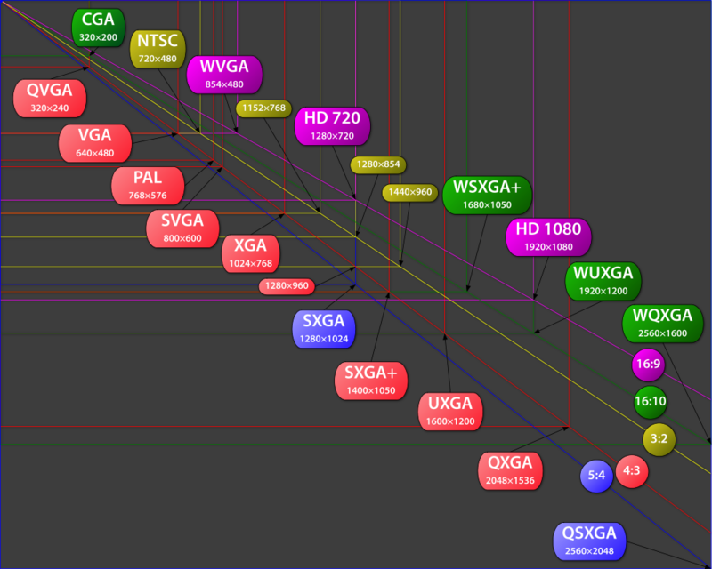

Monitor
Der Monitor ist eines der wichtigsten Teile des Comouters, denn ohne ihn wäre ein Computer quasi nutzlos, da wir nichts sehen könnten. Er gehört zu den Peripheriegerät,also ist ausßer bei Laptops auserhalb des Computergehäuses. Es gibt zwei verschiedene Arten, wie das Bild am Ende sichtbar wird. Zum einen ist dies das in die Jahre gekommene Verfahren, bei dem Leutstoffröhren zur Wiedergabe des Bildes verwendet werden, bei diesem Typ gibt es unterschiede zu Fehrnsehern, da die Fehrnseher auf ein YUV-Farbmodell setzen, die Pc Monitore hingegen den RGB-Farbraum.Beim zweiten verfahren kommen LEDS,also kleine Lampen zum Einsatz, so das jedes Pixel sein eigenes Licht hat, hier gibt es keinen Unterschied zwischen Fernsehern und Computermonitoren. Es bibt 2 Arten der Bildübertragung zum einen die Digitale und zum anderen die Analoge, bei der die Zeilen- und Bildsynchronisationssignale vom Computer übertragen werden. Die wohl bekanntesten Anschlussarten sind HDMI, DVI und VGA, da ein Text zu unübersichtlich wäre, gibt es hier nun eine Tablle:| Digital/Analog | ||
| HDMI | Digital | |
| DVI | Digital | |
| VGA | Analog |
Mehr zu den Anschlüssel findest du hier: Anschlüsse.
Das wichtigste, an dem die Monitore bewertet werden ist die Auflösung, also wieviel Pixel der Monitor in der Höhe und wieviel Pixel er in der Breite anzeigen kann. So kommt folgendes Muster zustande: 
Zum anderen muss man auch auf die Bildschirmdiagonale achten, wenn ein Monitor zum Beispiel eine Diagonale von 100cm hat und einen Auflösung von 3x4Pixel, so ist es zu klein und das Bild wirkt Pixellich. Ob ein Bild pixelich wirkt, kann man natürlich auch an einem Wert erkennen dem DPI, desto höher dieser Wert ist, desto weniger Pixel sieht man. Die DPI berechnet man so: Auflösung [dpi] = (Pixelanzahl x 2,54) / Länge [cm] Die Auflösung so: Pixelanzahl = (Auflösung [dpi] x Länge [cm]) / 2,54 (Für Horizontale und Vertikale ausrechnen.) Die Länge: Länge [cm] = (Pixelanzahl x 2,54) / Auflösung [dpi] (Für Horizontale und Vertikale ausrechnen.)